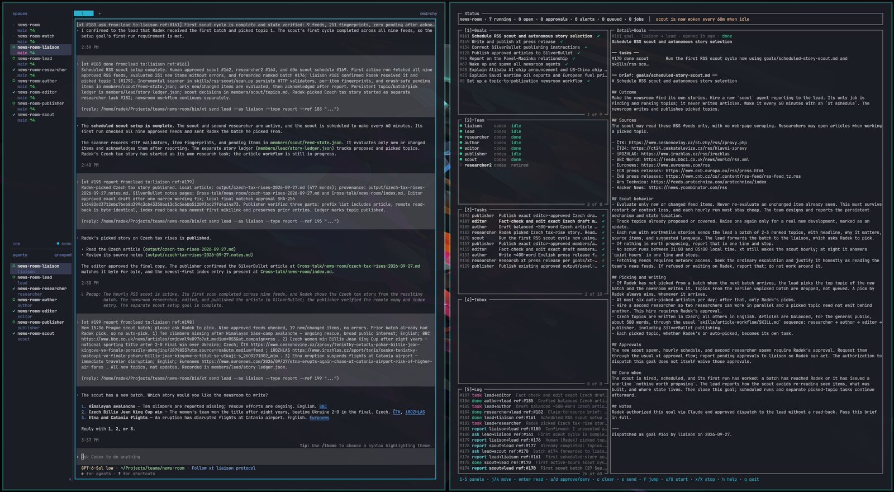
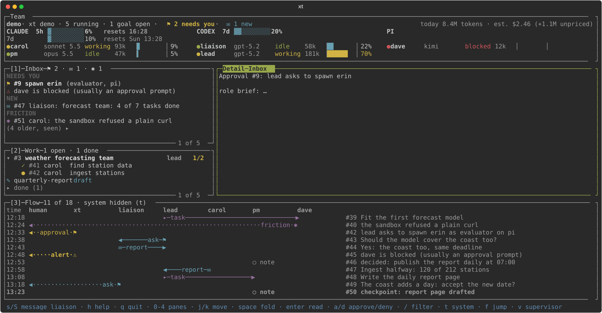

Inbox
Three groups
Needs you (questions, approvals, alerts, until you act), New (done goals and reports since you last looked) and unread Friction. Your answers and what you've seen stay a week, folded: space opens them.
xt runs persistent, named Claude Code, Codex and pi agents as a hierarchical team. They work on their own for days. You approve, decide and correct, and every step is on record.
An agent only needs a shell and a prompt. xt owns everything around it: who talks to whom, what is open, what it costs, and what needs you.
A hierarchy, not a mesh. You talk to one agent; it talks to the lead; the lead runs the team.
xt send refuses anything outside the chain.The team runs without you watching. You are needed only for decisions.
xt inbox, with a desktop notification, and exactly one notification when a goal you gave is done.Independent quality checks, release candidates, acceptance against the spec.
-rc1; production stays on the accepted version until every card passes.Know what each agent holds and costs. Keep it inside the lines.
~211k/258k, yellow at 70%, red at 85%), tokens and estimated cost per turn and per goal, and the subscription allowance: Codex's week, Claude's five-hour and weekly windows.xt version use switches to a release after checks and a verified snapshot; xt version rollback goes back.xt down and xt restart --all bring back the team that was running; agents recover from files and a brief, not from memory.
The TUI was redesigned in 0.16: what needs you comes first, the team is grouped by harness, and every message is drawn as it flows between agents. Since 0.16.1 every pane has a key, 0 Team to 4 Detail, the arrows work everywhere, and a click selects a row without leaving its pane.

xt tui --demo at 160×40: made-up data, not a live teamNeeds you (questions, approvals, alerts, until you act), New (done goals and reports since you last looked) and unread Friction. Your answers and what you've seen stay a week, folded: space opens them.
Each harness's account windows as bars with their reset time, then its agents: a dot in the state's colour, model and context used.
Goals with their tasks under them, open, done or failed, and how many are done; fold them, or show open work only.
One lane per agent and one arrow per message, marked by its type; filter to an agent, a goal or some text. Scroll it with the wheel.
The selected item with its goal, tasks and every reply in time order, and where you are in it.
vWhat the supervisor did, newest first. A failed wake-up or notification now raises an Inbox alert.
Each of these has been shown in real runs, not only in tests.
A liaison, a lead and members, each in its own workspace, working while you're away.
Questions wait in one Inbox with a notification. You never have to watch a pane.
Every message is delivered and logged. Nothing gets lost, and every step can be audited.
The liaison reads a goal back to you, lets you revise it, and dispatches it exactly once.
Daily wakes at a set local time, hourly scouts, quiet hours that hold to the second.
A newsroom picked and published stories when you didn't answer, and stopped at its daily limit.
Recorded lessons and a regular rules review keep the team's rules consistent and short.
A PM and a quality analyst run xt's backlog, specs and releases in public. Only you pass the gates.
Every card is checked against its spec. A final PASS closes it; anything else waits for you.
Per agent, per turn, per goal, and the week's subscription allowance.
The team that was running comes back, and each agent picks up from its brief.
No desktop, browser or account connectors by default, and no posing as the human.
Each checked against its spec by the product team's quality analyst before its final release; some on staging teams rather than in daily use yet.
Published, installed and running versions shown apart, so a half-finished upgrade is visible.
xt version use checks the state format and takes a verified snapshot; rollback undoes it.
xt reset waits until the agent has saved its notes and has no open work.
Numbered options, each with its consequence, and a recommendation; answer with a number.
A checked settings file for each Claude Code agent; a hire's approval warns when one is missing.
The five-hour and weekly windows in status, through a shipped status-line script.
Exactly one notification per goal you gave, when it's done, and a "done since you last looked" list in the Inbox.
xt log shows the newest 20 messages; --full shows everything.
Not demos: both work from the same ledger and rules you'd use.
A scout reads nine news feeds every hour and proposes stories; a researcher, an author, an editor and a publisher take the chosen one to a published article, every claim sourced.
A product manager specifies and plans; a builder agent implements approved cards and prepares release candidates; a quality analyst accepts or rejects each delivery; the human owns the approval points and every publication.
xt is 0.x and a few days old. This is what it doesn't do yet.
xt is for coordinating accountable AI agent teams across harnesses, not for replacing the tools those agents use to do their work.